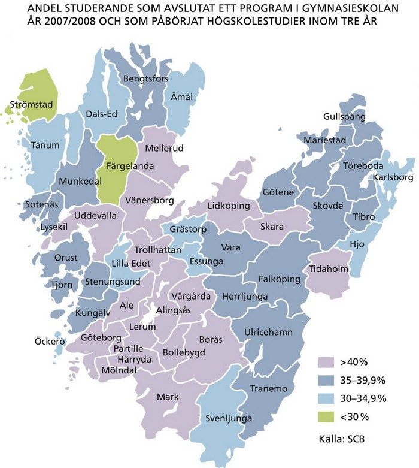

Utbildningsnivå: Allt fler högutbildade
Befolkningens formella utbildningsnivå fortsätter att stiga. År 2012 hade 25 procent av Västra Götalands befolkning i åldrarna 25–64 minst treårig eftergymnasial utbildning. Nivån är densamma som i riket. För bara ett decennium sedan var motsvarande siffra 17 procent.

Stora skillnader inom Västra Götaland
Skillnaderna inom Västra Götaland är stora och speglar de senaste decenniernas utveckling med en ökad inflyttning av högutbildade till storstäderna. Den högsta andelen med minst treårig eftergymnasial utbildning finns i Göteborgs kommun (50 procent) och den lägsta andelen i Svenljunga kommun (19 procent).
Kvinnor har generellt sett en högre utbildningsnivå än män. Andelen kvinnor med minst treårig eftergymnasial utbildning har i Västra Götaland ökat från 19 procent år 2002 till 29 procent år 2012. Motsvarande andel för män har ökat från 16 procent år 2002 till 21 procent år 2012.
Utbildningsnivån ökar
Utbildningsnivån har ökat dels på grund av att fler yngre har längre utbildning, dels eftersom andelen som skaffat sig eftergymnasial utbildning ökat. Andelen studenter i Västra Götaland som påbörjar högskolestudier inom tre år efter att har tagit studenten har ökat från 35 procent läsår 2004/2005 till 39 procent 2010/2011.
I ett europeiskt perspektiv är andelen invånare med eftergymnasial utbildning hög i Västsverige (35 procent) och ligger betydligt högre än genomsnittet i europeiska regioner (26 procent).
Dock finns det ett 60-tal regioner i EU där ännu högre andel av befolkningen har eftergymnasial utbildning, många av dem är huvudstadsregioner.

Övergång till högskola: Behörighet till högskola och universitet
Andelen elever med slutbetyg från gymnasieskolan, som ger grundläggande behörighet till högskolestudier varierar mellan kommunerna i Västra Götaland. I de kommuner där behörigheten till högskolan är lägst har endast cirka 63 procent av eleverna uppnått grundläggande behörighet inom tre år.
I de mest framgångsrika kommunerna uppnår mellan 77–84 procent av eleverna behörighet. Dessa siffror avser grundläggande behörighet, men de flesta högskoleutbildningar kräver särskild behörighet. Vilken särskild behörighet som krävs varierar beroende på högskoleutbildning.
Ett av de mål som EU vill uppnå genom strategin Europa 2020 är att andelen elever som hoppar av skolan i förtid ska vara lägre än tio procent. Problemet med avbruten skolgång är med andra ord inte unikt för Sverige eller Västra Götaland utan berör hela Europa. Att minska antalet avhopp från gymnasiet, antalet så kallade drop outs, är därför en fråga med hög prioritet.
Andelen gymnasieelever i kommunerna som fullföljer sin utbildning inom fyra år varierar inom Västra Götaland. I de kommuner där eleverna i högst utsträckning fullföljer sin utbildning ligger nivån på cirka 85–90 procent av gymnasieeleverna. I de kommuner där flest studieavbrott sker är det endast cirka 73 procent av eleverna som fullföljer sin utbildning inom fyra år.
Lärosäten: Populära lärosäten i Västra Götaland
År 2012 läste drygt 50 500 helårsstudenter vid de fem universitet/högskolor som finns i Västra Götaland. Detta är en ökning med drygt 4500 studenter från år 2007. Mätt i antalet registrerade studenter i grundutbildningen höstterminen 2012 är Göteborgs universitet landets tredje största, efter Stockholms och Lunds universitet.
Av alla invånare i Västra Götaland som började studera vid universitet/högskola höstterminen 2012 valde 63 procent något av Västra Götalands lärosäten. Det var endast Chalmers och högskolan i Skövde som rekryterade mer än hälften av sina nybörjare utanför Västra Götaland.
Chalmers är ett populärt lärosäte även bland utländska studerande och andelen utländska studenter är hög. Den relativa ökningen av antalet utländska studenter under perioden 2001–2012 har dock varit störst vid de övriga tre högskolorna i Västra Götaland.
Forskning: Många forskarstuderande
Utöver cirka 50 500 helårsstudenter i grundutbildningen finns även cirka 2 900 aktiva forskarstuderande i Västra Götaland. Det är 15 procent av alla aktiva forskarstuderande i landet. Antalet avlagda forskarexamina har nästan fördubblats den senaste 20-årsperioden. Nästan hälften av alla forskarexamina avläggs inom teknikvetenskap och en tredjedel inom medicin.
I Västra Götaland finns dessutom 25 folkhögskolor och Västra Götalandsregionen driver sju av dessa. Så gott som varje kommun har ett eget lärcentra med utrustning för distansundervisning där man bland annat kan genomföra högskoleutbildning på distans.
Folkhögskolor: Omtyckta utbildningar vid folkhögskolor
I Västra Götaland finns 20 folkhögskolor och fem folkhögskolefilialer. Västra Götalandsregionen stödjer de 20 folkhögskolorna med stor geografisk spridning inom länet. Dessa folkhögskolor präglas också av stor bredd när det gäller volym, profilering och inriktning. År 2012 deltog 6 661 personer i långa kurser, vilket är oförändrat jämfört med 2011, både i Västra Götaland och i Sverige som helhet. Det är övervägande kvinnor som deltar i de långa kurserna, ungefär 62 procent kvinnor och 38 procent män.
Livslångt lärande
De tio studieförbunden står för många möjligheter till ett livslångt lärande i hela Västra Götaland och arrangerar bland annat studiecirklar och annan folkbildningsverksamhet liksom mer publika arrangemang såsom kulturprogram. Det är något fler kvinnor än män som tar del av studieförbundens verksamhet.
Studiecirkelverksamheten har sakta men säkert minskat i omfattning de senaste åren, såväl nationellt som regionalt.
De senaste åren har studieförbunden anordnat fler kulturprogram och antalet besökare har ökat med 10 procent i Västra Götaland mellan 2009 och 2012, att jämföra med 5 procent nationellt.
- Stäng meny
- Start
- Geografi och befolkning
- Den ekomoniska dimensionen
- Den sociala dimensionen
- Miljödimensionen
- Näringsliv
- Kompetens och kunskap
 Utbildningsnivå: Allt fler högutbildade
Utbildningsnivå: Allt fler högutbildade- Stora skillnader inom Väst
- Utbildningsnivån ökar
- Övergång till högskola: Behörighet till högskola o
- Lärosäten: Populära lärosäten i Västra Götaland
- Forskning: Många forskarstuderande
- Folkhögskolor: Omtyckta utbildningar vid folkhögsk
- Livslångt lärande
- Infrastruktur och kommunikationer
- Kultur
- Hälsa
- Tabeller
- Diagram